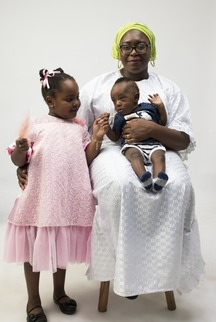

Antoss Photography is a creative studio that first started out as a hobby by its founder Taofiq while he was in college.
This hobby morphed into a full blown buisness when Taofiq quit his mid-level position in biglaw and focused solely
on photography

Rachel Mcdermot for Vanity Fair
Taofiq started out as a family photographer taking photos of family members at events such as weddings, child dedication, birthday parties etc charging very low fees while improving his craft as a photographer.
Taofiq got his first big break as a Photographer when he was commissioned to document a full-sized wedding of about 300 people. It felt reassuring that this couple trusted my abilities for such a momentous occassion but imposter syndrom did not let me enjoy the moment. Thankfully, I had an amazing mentor who acted as a second shooter on the big day.